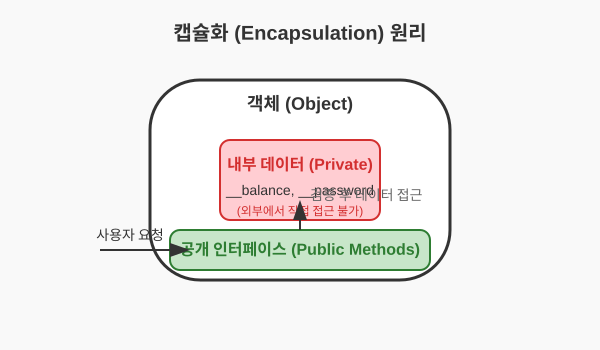

3주차: 캡슐화와 정보 은닉 - 안전한 데이터 관리 🔒
우리는 지난 시간까지 클래스를 통해 데이터를 묶는 법을 배웠습니다. 하지만 모든 데이터를 아무나 수정할 수 있게 공개한다면 어떻게 될까요? 예를 들어, 은행 계좌 객체의 balance(잔액) 변수를 누구나 수정할 수 있다면, 누군가 내 잔액을 마음대로 10억으로 바꿀 수도 있을 것입니다.
이런 문제를 해결하기 위해 사용하는 것이 캡슐화(Encapsulation)와 정보 은닉(Information Hiding)입니다.
1. 캡슐화 (Encapsulation)란?
캡슐화는 데이터(속성)와 그 데이터를 처리하는 함수(메서드)를 하나로 묶고, 외부에서 데이터에 직접 접근하는 것을 제한하는 것입니다. 마치 알약의 캡슐이 내부의 약 성분을 보호하고, 사용자는 캡슐이라는 인터페이스를 통해서만 약을 복용하는 것과 같습니다.

1.1 왜 캡슐화가 필요한가요?
- 데이터 보호: 잘못된 값이 들어오는 것을 막을 수 있습니다. (예: 나이에 -5살 입력 방지)
- 독립성 유지: 내부 구현 방식을 바꿔도, 외부에서 사용하는 방법(인터페이스)은 그대로 유지할 수 있습니다.
- 복잡성 감소: 사용자는 내부의 복잡한 작동 원리를 몰라도, 제공되는 메서드만 사용하면 됩니다.
2. 파이썬의 접근 제어자 (Access Modifiers)
파이썬은 Java나 C++처럼 private, public 같은 엄격한 키워드는 없지만, 이름 규칙(Naming Convention)을 통해 접근 권한을 표시합니다.
2.1 Public (공개)
- 표기:
name(일반적인 변수명) - 특징: 어디서든 접근 가능합니다.
2.2 Protected (보호됨)
- 표기:
_name(언더바 하나로 시작) - 특징: “이 변수는 내부용이니 가급적 건드리지 마세요”라는 약속입니다. 기술적으로는 접근이 가능하지만, 개발자들 사이의 매너입니다.
2.3 Private (비공개)
- 표기:
__name(언더바 두 개로 시작) - 특징: 클래스 외부에서 접근하려고 하면
AttributeError가 발생합니다. 파이썬이 내부적으로 이름을 바꾸어 숨기기 때문입니다. (Name Mangling)
class BankAccount:
def __init__(self, owner, balance):
self.owner = owner # Public
self.__balance = balance # Private (외부 접근 불가)
acc = BankAccount("지니", 1000)
print(acc.owner) # 결과: 지니
# print(acc.__balance) # ❌ AttributeError 발생!
3. Getter와 Setter, 그리고 @property
데이터를 숨겼다면, 이제 안전하게 데이터를 읽고 수정할 방법이 필요합니다. 이때 사용하는 것이 Getter와 Setter 메서드입니다.
3.1 전통적인 방식 (Getter/Setter)
class BankAccount:
def __init__(self, balance):
self.__balance = balance
def get_balance(self): # Getter
return self.__balance
def set_balance(self, amount): # Setter
if amount < 0:
print("잔액은 음수가 될 수 없습니다!")
else:
self.__balance = amount
3.2 파이썬다운 방식: @property 데코레이터
파이썬에서는 메서드를 마치 변수처럼 사용할 수 있게 해주는 @property라는 아주 멋진 기능을 제공합니다.
class BankAccount:
def __init__(self, balance):
self.__balance = balance
@property
def balance(self): # Getter 역할
return self.__balance
@balance.setter
def balance(self, value): # Setter 역할
if value < 0:
raise ValueError("잔액은 음수가 될 수 없습니다!")
self.__balance = value
acc = BankAccount(1000)
print(acc.balance) # 메서드지만 변수처럼 호출 가능! (Getter)
acc.balance = 2000 # 변수에 값을 넣듯 호출 가능! (Setter)
# acc.balance = -100 # ❌ ValueError 발생!
✍️ 이번 주 연습 문제
문제 1. Person 클래스를 만들어 보세요.
- 속성:
__age(Private) - 기능:
@property를 사용하여 나이를 가져오고, 설정할 때 0보다 작은 값이 들어오면 에러를 발생시키도록 구현하세요.
문제 2. 캡슐화가 적용되지 않은 코드와 적용된 코드의 차이점을 ‘데이터 무결성’ 관점에서 설명해 보세요.
문제 3. (심화) 파이썬의 __name (Private) 변수가 실제로 완전히 숨겨지는 것인지, 아니면 다른 방법으로 접근할 수 있는 방법이 있는지 조사하고 코드로 증명해 보세요. (힌트: _ClassName__variableName)
🔍 Deep Dive: 네임 맹글링(Name Mangling) 작동 메커니즘과 메모리 보안의 진실
파이썬 클래스에서 변수 앞에 언더바 두 개를 붙이면(__balance) 외부에서 접근이 불가능하다고 배웁니다. 하지만 이는 물리적으로 메모리가 격리되는 것이 아닙니다.
- 네임 맹글링(Name Mangling): 파이썬 인터프리터가 코드를 바이트코드로 파싱할 때,
__변수명을_클래스명__변수명형태로 이름을 자동으로 바꾸어(Mangling) 버리는 기법입니다. - 실제 접근 가능성: 런타임에 인스턴스의 네임스페이스 딕셔너리(
__dict__)를 확인해 보면,_BankAccount__balance라는 키로 실제 값이 저장되어 있는 것을 볼 수 있습니다. 즉, 외부에서도acc._BankAccount__balance라고 직접 접근하면 제한 없이 값을 읽거나 쓸 수 있습니다. - 철학적 의미: 파이썬은 “우리는 모두 성숙한 성인 개발자다(We are all consenting adults here)”라는 철학을 지향합니다. 컴파일러 수준에서 접근을 물리적으로 원천 차단하기보다는, 규약을 지켜 상호 간에 안전하게 코딩하는 가치를 존중합니다.
☕ Java vs Python 스나이퍼 비교
클래스 필드와 접근 제어 방식의 차이
- Java:
private,protected,public및default(package-private)접근 제어자(Access Modifier) 키워드를 문법 레벨에서 명확히 강제합니다. JVM 클래스로더가 로드할 때 바이트코드 수준에서 이 규칙을 검증하므로,private필드를 부당하게 침범하면 프로그램 컴파일 자체가 불가능합니다. (리플렉션 API를 활용한 강제 우회는 예외) - Python: 키워드가 아예 존재하지 않으며, 단지 언더바 개수로 약속하는 명명 관례(Naming Convention)만 있습니다.
__변수는 네임 맹글링을 통해 이름만 바뀔 뿐이며, 위에서 설명한 것처럼 클래스 밖에서 언제든 우회하여 값에 도달하고 뜯어고칠 수 있습니다.
🎧 Vibe Coding
🗣️ 학생 프롬프트 (AI에게 이렇게 명령해 보세요): “파이썬으로
@property데코레이터를 사용하여 사용자의 이메일과 비밀번호를 검증하는User클래스를 작성해 줘. 이메일은 @가 들어가는지, 비밀번호는 8자리 이상인지 Setter에서 확인하고 잘못된 데이터는ValueError를 발생시키도록 짜 줘.”
코딩 영단어 학습 📝
Encapsulation: 캡슐화. (데이터와 데이터 조작 메서드를 하나의 클래스 캡슐로 묶어 결합도를 높이고 내부 데이터를 안전하게 격리하는 설계 기법입니다.)Access Modifier: 접근 제어자. (클래스 내 속성이나 메서드에 대해 외부나 자식 클래스가 도달할 수 있는 한계를 조절하는 키워드나 명명 규약입니다.)Name Mangling: 네임 맹글링. (파이썬에서__로 시작하는 비공개 속성의 이름을 CPython이_ClassName__variable형태로 자동 치환하여 우발적인 접근을 예방하는 런타임 기술입니다.)
📖 교재 상세 학습: 09 데이터 보호와 우아한 접근: 캡슐화와 프로퍼티
09 함부로 손대지 마시오: 캡슐화(Encapsulation)와 프로퍼티
클래스를 설계하다 보면, 붕어빵의 내부 앙금 레시피처럼 외부에서 함부로 점(.)을 찍어 건드리지 못하게 꽁꽁 감춰야 할 민감한 데이터(예: 통장 잔고, 주민번호, 게임 캐릭터의 방어력 공식 등)가 생깁니다. 이렇게 속과 겉을 분리하여 내부 정보를 보호하는 기법을 캡슐화(Encapsulation) 혹은 정보 은닉이라고 부릅니다.
1. 파이썬식 정보 은닉의 2가지 룰
다른 언어(Java 등)는 private 같은 단단한 자물쇠 키워드를 제공하지만, 파이썬은 “우리 모두 책임감 있는 어른이니 굳이 문을 걸어 잠그진 말자(We are all consenting adults here)”는 독특한 해커 철학을 가집니다. 대신, 약속된 이름표 표기법으로 강력한 경고를 줍니다.
암묵적 경고: 언더스코어 1개 (_변수명)
실무에서 가장 많이 쓰이는 약속입니다. 변수나 메서드 이름 맨 앞에 _를 딱 1개 붙여두면 “이 데이터는 이 클래스 내부에서만 쓸 거니까, 밖에선 제발 꺼내 쓰지 마세요” 라는 신사적인 경고선 역할을 합니다.
class BankAccount:
def __init__(self, owner, balance):
self.owner = owner
self._balance = balance # [주의] 문법적 강제성은 없지만 절대 건드려선 안 되는 금단의 영역!
소문 숨기기: 이름 맹글링 (__변수명)
정말로 숨기고 싶다면 언더바를 2개(__) 연속으로 붙입니다. 파이썬은 이 녀석을 보는 순간 냅다 변수 이름을 _클래스명__변수명 형태로 괴상하게 찌그러뜨려 놓기 때문에, 밖에서는 도저히 기존 이름으로 찾을 수 없게 만듭니다. (Name Mangling)
2. 변수 조작의 통제소: @property (프로퍼티 데코레이터)
내부 데이터를 꽁꽁 숨겨(_변수) 두었다면, 밖에서 값을 읽거나 값을 수정할 때 반드시 우리가 만들어둔 특정 검문소(메서드)를 거치도록 통제해야 합니다. 투박한 get_나이(), set_나이() 함수를 일일이 호출하는 대신 파이썬은 엄청나게 우아한 @property 마법을 선사합니다.
마치 밖에서는 그냥 평범한 변수처럼 쿨하게 읽고 쓰는 것 같지만, 실상은 그 뒤에 숨겨진 보안 검사 메서드가 몰래 핑글핑글 돌아가는 구조입니다!
코드: 무적의 프로퍼티 방어막
class Character:
def __init__(self, nickname):
self.nickname = nickname
self._level = 1 # ◀ 진짜 레벨 데이터는 언더바로 몰래 숨겨둡니다.
# [읽기 전용 통로] @property를 달아주면 밖에서는 변수처럼 읽습니다.
@property
def level(self):
# 원한다면 여기서 가짜 정보를 보여줄 수도 있습니다!
return self._level
# [쓰기 전용 검문소] 값을 변경할 때 무조건 이 깐깐한 필터를 통과시킵니다.
@level.setter
def level(self, new_level):
if new_level < 1 or new_level > 99:
print("[운영자 경고] 비정상적인 레벨업 시도가 적발되었습니다!")
return # 강제 종료하여 핵심 데이터 오염 결사 방어!
self._level = new_level
player = Character("초보파이썬")
# 메서드인데 괄호() 없이 아주 자연스럽게 속성처럼 조회 (getter 작동)
print(f"현재 레벨: {player.level}")
# 변수에 스윽 대입하는 척하지만, 사실은 setter 메서드 검문소를 때립니다!
player.level = 999
# 출력: [운영자 경고] 비정상적인 레벨업 시도가 적발되었습니다!
# 진짜 데이터 _level은 완벽하게 예전 수치(1)를 유지하며 살아남았습니다!
이제 여러분은 누구도 함부로 망가뜨릴 수 없는, 코어까지 탄탄하게 보호받는 튼튼한 객체를 설계할 수 있는 방패를 얻게 되었습니다!
📖 교재 상세 학습: 5. 정보 은닉과 프로퍼티 (Encapsulation)
5. 정보 은닉과 프로퍼티 (Encapsulation)
클래스를 설계할 때, 객체 내부의 민감한 데이터나 복잡한 상태를 외부에서 함부로 건드리지 못하게 꽁꽁 싸매어 보호하는 기법을 캡슐화(Encapsulation) 또는 정보 은닉(Information Hiding)이라고 부릅니다.
다른 언어(Java 등)는 private, public 같은 엄격한 접근 제어자 키워드가 있지만, 파이썬은 ‘우리 모두 다 큰 성인이니 굳이 문을 잠그진 말자’는 철학을 가져서 진짜 완벽한 은닉은 없습니다. 대신, 독특한 이름표 규칙(Naming Convention)과 데코레이터를 통해 은닉을 훌륭하게 모방합니다.
5.1 암묵적인 경고: 언더스코어 1개 (_name)
파이썬 개발자들 사이의 굳은 약속입니다. 변수나 메서드 이름 앞에 언더스코어(_)를 1개 붙이면, “이 변수는 내부적으로만 쓸 거니까 외부에서 함부로 점(.) 찍어서 건드리지 마세요” 라는 강력한 경고 메시지를 뜻합니다. (문법적인 강제성은 없습니다.)
class BankAccount:
def __init__(self, owner, balance):
self.owner = owner
# 외부에서 함부로 건드리면 안 되는 민감한 잔고 데이터
self._balance = balance
account = BankAccount("홍길동", 10000)
# (강제성은 없으므로 읽거나 수정할 수는 있지만, 파이썬 생태계의 금기사항입니다!)
print(account._balance)
5.2 강렬한 방어막: 맹글링 (__name)
정말로 이름을 꽁꽁 숨기고 싶을 때는 변수명 앞에 언더스코어 2개(__)를 연속으로 붙입니다.
파이썬은 이 변수를 보는 순간, 몰래 변수 이름을 _클래스명__변수명 형태로 괴상하게 찌그러뜨려 놓습니다. 이를 이름 맹글링(Name Mangling)이라고 부릅니다.
class SecretAgent:
def __init__(self, code_name):
# 맹글링 발동! 외부에선 절대 '__code_name' 으로 찾을 수 없습니다.
self.__code_name = code_name
def reveal(self):
# 클래스 내부의 메서드에서는 정상적인 이름으로 접근 가능합니다.
return f"내 정체는 {self.__code_name} 이다."
agent = SecretAgent("007")
# [에러 발생] 외부에서 이 이름으로 찾으려고 하면 찾을 수 없다고 튕겨냅니다.
# print(agent.__code_name)
# (굳이 해킹(?) 하자면 찌그러진 맹글링 이름 전체를 치면 접근할 순 있습니다.)
print(agent._SecretAgent__code_name) # 007
5.3 우아한 속성 제어: @property 데코레이터
데이터를 은닉(_변수명)해놓고 외부에는 이를 안전하게 읽고 쓸 수 있는 통로만 열어주고 싶을 때, 자바처럼 get_name(), set_name() 같은 투박한 메서드를 만드는 대신 파이썬은 @property 라는 우아한 마법을 제공합니다.
마치 일반 변수에 접근하는 것처럼 보이지만, 사실은 우리가 숨겨둔 통제(메서드)를 반드시 거치게 만드는 필터 역할을 합니다.
class Person:
def __init__(self, name, age):
self.name = name
# 실제 나이 데이터는 철저히 은닉 (직접 수정 불가)
self._age = age
# [1. Getter] 프로퍼티를 달아주면 밖에서는 변수처럼 읽을 수 있습니다.
@property
def age(self):
return self._age
# [2. Setter] 값을 수정할 때 반드시 이 검사소(메서드)를 통과하게 만듭니다.
@age.setter
def age(self, new_age):
if new_age < 0:
print("[시스템 경고] 나이는 0보다 작을 수 없습니다!")
else:
self._age = new_age
p = Person("앨리스", 25)
# 마치 변수처럼 값을 읽음 (사실은 @property 메서드 실행됨)
print(p.age) # 25
# 마치 변수처럼 값을 할당함 (사실은 @age.setter 검사소가 발동됨)
p.age = -10 # [시스템 경고] 나이는 0보다 작을 수 없습니다!
print(p.age) # 여전히 안전하게 25를 유지함!
📖 교재 상세 학습: 3. 강력한 보안 요원: 디스크립터(Descriptor)
3. 강력한 보안 요원: 디스크립터(Descriptor)
프로퍼티(@property)는 너무 멋지고 편하지만, 단점이 하나 있습니다. 만약 로봇의 양팔, 양다리, 머리 등 수십 개의 부품을 모두 보안 검사해야 한다면? 방어 코드(setter)를 10번, 20번 주저리주저리 반복해서 적어줘야 하니 귀찮고 지저분해집니다.
이럴 때, 나만의 막강한 ‘보안 요원 템플릿’을 딱 하나 만들어두고 여러 변수에 찰싹찰싹 붙여서 재활용하는 고급 기술이 바로 디스크립터(Descriptor) 입니다.
3.1 디스크립터 요원의 3가지 핵심 무기
파이썬의 인스턴스가 어떤 변수에 접근하려 할 때, 파이썬은 변수가 방치되어 있는지 아니면 ‘디스크립터 요원’이 지키고 있는지 검사합니다. 요원이 되기 위해선 다음 3가지 특별한 방패(메서드) 중 하나 이상을 들고 있어야 합니다.
__get__(self, instance, owner): 데이터를 읽으려 할 때 튀어나오는 방패__set__(self, instance, value): 데이터를 바꾸려 할 때 튀어나오는 방패__delete__(self, instance): 데이터를 지우려 할 때 튀어나오는 방패
3.2 디스크립터 직접 만들어보기
‘이름표’를 지키는 보안 요원 클래스를 만들어 볼까요? 누군가 값을 갱신하려 할 때마다 화면에 누가 접근 중인지 경고를 띄워봅시다.
# 1. 보안 요원(디스크립터) 클래스 만들기
class NameGuard:
def __init__(self, key_name):
self.key_name = "_" + key_name # 실제 값을 담아둘 보물 상자 이름 (예: _player)
def __get__(self, instance, owner):
print(f"[알림] 앗! 누군가 {self.key_name} 금고를 열어 데이터를 읽어가네요!")
# 로봇(instance)의 뱃살(__dict__) 안에서 남몰래 값을 꺼내 줌
return instance.__dict__[self.key_name]
def __set__(self, instance, value):
print(f"[보안] 스탑! {self.key_name} 금고 속 데이터를 '{value}' 로 바꾸겠습니다.")
instance.__dict__[self.key_name] = value
# 2. 로봇(소유자) 클래스에 방패 달아주기
class GameCharacter:
# 플레이어 1과 2 변수에 NameGuard 보안 요원 배치!
player1 = NameGuard("player1")
player2 = NameGuard("player2")
def __init__(self, p1_name, p2_name):
self.player1 = p1_name
self.player2 = p2_name
# 3. 실행해보기!
game = GameCharacter("마리오", "쿠파")
# 출력:
# [보안] 스탑! _player1 금고 속 데이터를 '마리오' 로 바꾸겠습니다.
# [보안] 스탑! _player2 금고 속 데이터를 '쿠파' 로 바꾸겠습니다.
# 데이터를 읽어도 에이전트가 작동!
print(game.player1)
# 출력:
# [알림] 앗! 누군가 _player1 금고를 열어 데이터를 읽어가네요!
# 마리오
멋지지 않나요? NameGuard 하나만 만들어 두면, 아무리 많은 변수라도 단 한 줄로 강력한 방어 요원을 배치할 수 있습니다!
3.3 [주의] 내 꼬리 내가 물기 (무한 루프 조심!)
디스크립터를 짤 때 가장 많이 하는 실수가 바로 영원히 빙글빙글 도는 무한 루프의 지옥에 빠지는 것입니다.
만약 보안 요원 내부의 __get__ 설계도 창에서
return getattr(instance, self.key_name) (파이썬 내장 조회 함수)을 무심코 쓰면 어떻게 될까요?
getattr 함수는 내부적으로 또 __get__ 가드를 불러오기 때문에, 가드가 튀어나와서 getattr을 부르고 -> getattr이 또 가드를 부르고 -> 가드가 또 부르는 끝없는 악몽(에러)이 펼쳐집니다!
그래서 디스크립터 강호들은 이런 꼬리 물기를 피하기 위해, 객체의 뱃속 깊은 주머니인 instance.__dict__ (인스턴스 딕셔너리)를 강제로 직접 열어서 값을 안전하게 훔쳐(조회해) 옵니다. 주의하세요!
[!TIP] 놀랍게도 파이썬이 자랑하는 평범한 ‘함수(
function)’나 ‘클래스 메서드(method)’들 역시, 내부적으로는__get__이 구현되어 있는 아주 거대한 디스크립터 보안 요원 중 하나일 뿐입니다! 즉, 디스크립터는 ‘파이썬의 심장’과도 같은 초특급 핵심 지식입니다!
📖 교재 상세 학습: 1. 프로퍼티(property)의 마법
1. 프로퍼티(property)의 마법
로봇의 체력을 관리하는 프로그램을 짜고 싶습니다. 체력(hp)은 무조건 0에서 100 사이여야 합니다. 누군가 robot.hp = 9999 처럼 비정상적인 체력을 직접 집어넣는 것을 막으려면 어떻게 해야 할까요?
이를 위해 파이썬은 변수 앞을 가로막는 프로퍼티(Property)라는 스마트 가드(경호원)를 제공합니다.
1.1 직접 접근 금지! 프라이빗 변수 흉내 내기
파이썬에서는 진짜 데이터를 남몰래 숨겨두기 위해 변수 이름표 앞에 밑줄(_)을 하나 붙이는 암묵적인 약속을 합니다. self.hp 대신 self._hp 라고 쓰는 것이죠. 이건 “이 데이터는 직접 건드리지 마세요!”라는 뜻입니다.
대신 외부에서 접근할 수 있도록 안전한 창구를 열어주는데, 이때 사용하는 것이 바로 @property 마법(데코레이터)입니다.
1.2 getter, setter, deleter 구조
프로퍼티는 데이터를 건드릴 때 일어나는 3가지 행동을 감시합니다.
- 읽을 때 (getter):
@property - 쓸 때 (setter):
@메서드이름.setter - 지울 때 (deleter):
@메서드이름.deleter
class Robot:
def __init__(self, hp):
# 진짜 데이터는 밑줄 '_' 을 붙여서 숨깁니다.
self._hp = hp
# 1. 누군가 robot.hp 를 "읽으려" 할 때 작동! (getter)
@property
def hp(self):
print("[경비원] 체력을 조회합니다.")
return self._hp
# 2. 누군가 robot.hp 에 숫자를 "넣으려" 할 때 작동! (setter)
@hp.setter
def hp(self, value):
print(f"[경비원] 조심해! {value}로 변경 요청이 들어왔어!")
if value < 0:
self._hp = 0 # 0 밑으로는 못 내려가게 막기!
elif value > 100:
self._hp = 100 # 100 이상으로는 못 올라가게 막기!
else:
self._hp = value
# 3. 누군가 del robot.hp 로 "지우려" 할 때 작동! (deleter)
@hp.deleter
def hp(self):
print("[경비원] 체력 데이터가 삭제되었습니다.")
del self._hp
# 로봇을 생성해 볼까요?
my_robot = Robot(50)
# (1) 값 읽기 -> 내부적으로 @property가 달린 함수가 자동 실행!
print(my_robot.hp)
# [경비원] 체력을 조회합니다.
# 50
# (2) 값 쓰기 (해킹 시도!) -> 내부적으로 @hp.setter 함수가 방어!
my_robot.hp = 999
print(my_robot.hp)
# [경비원] 체력을 조회합니다.
# 100 (999가 아니라 100으로 철벽 방어!)
이렇게 프로퍼티를 사용하면, 마치 평범한 변수처럼(my_robot.hp = 10) 편하게 코드를 짜면서도, 그 뒷면에서는 함수가 작동하기 때문에 강력한 검사와 통제를 할 수 있습니다!
1.3 가짜 변수 (계산된 프로퍼티) 만들기
심지어 실제로는 존재하지도 않는 변수를 존재하는 것처럼 꾸밀 수도 있습니다.
사각형의 경우 너비와 높이만 저장해 두고, ‘면적(area)’ 이라는 프로퍼티를 호출할 때 즉석에서 계산해서 뱉어주게 만들면 됩니다.
class Rectangle:
def __init__(self, width, height):
self.width = width
self.height = height
# 면적은 값을 저장해두지 않고 부를 때마다 즉석 요리!
@property
def area(self):
return self.width * self.height
box = Rectangle(10, 5)
print(box.area) # 50 (함수지만 이름처럼 부름!)
📖 교재 상세 학습: 2. 내 손으로 만드는 데코레이터 공장
2. 내 손으로 만드는 데코레이터 공장
파이썬에서 친절하게 기본으로 제공하는 @property 라는 데코레이터를 이용해 멋진 보안 문지기를 만들었죠? 그렇다면 이 property 는 속이 어떻게 생겼길래 이런 마법을 부리는 걸까요?
우리가 직접 그 내부와 쏙 빼닮은 나만의 “수제 프로퍼티 클래스”를 만들어보면서 원리를 뜯어보겠습니다.
2.1 커스텀 Property 클래스의 구조
파이썬의 property는 사실 함수가 아니라 거대한 통제실 클래스입니다.
이 통제실 안에는 데이터를 읽고(fget), 쓰고(fset), 지우는(fdel) 3명의 요원이 대기하고 있습니다.
이 원리를 따라 우리만의 통제실 MyProperty 인스턴스를 직접 만들어 보면 이렇습니다.
class MyProperty:
# 3명의 요원(함수)을 초기에 등록받는 역할을 합니다.
def __init__(self, fget=None, fset=None, fdel=None):
self.fget = fget
self.fset = fset
self.fdel = fdel
# '읽기' 명령이 들어왔을 때 fget 요원 출동!
def __get__(self, obj, objtype=None):
if self.fget is None:
raise AttributeError("읽을 수 없는 속성입니다.")
return self.fget(obj)
# '쓰기' 명령이 들어왔을 때 fset 요원 출동!
def __set__(self, obj, value):
if self.fset is None:
raise AttributeError("변경할 수 없는 속성입니다.")
self.fset(obj, value)
# '지우기' 명령이 들어왔을 때 fdel 요원 출동!
def __delete__(self, obj):
if self.fdel is None:
raise AttributeError("지울 수 없는 속성입니다.")
self.fdel(obj)
이 코드가 바로 파이썬에 내장되어 있는 property 클래스의 아주 단순화된 핵심 심장부입니다. 이 통제실의 핵심은 바로 __get__, __set__, __delete__ 라는 파이썬 고유의 마법 주문(스페셜 메서드)들에 있습니다.
2.2 데코레이터를 등록해주는 도구 만들기
여기에, 내장 @property 처럼 우리도 함수 바로 위에 @내이름.setter를 붙일 수 있도록 데코레이터 지원 파트를 마저 붙여주는 것이 좋습니다.
class MyProperty:
# (앞선 __init__, __get__, __set__ 생략...)
# 누군가 @이름.setter 데코레이터를 쓸 수 있게 열어주기!
def setter(self, fset_func):
print(">> 새 setter 요원 등록 완료!")
# 기존 요원들(fget, fdel)은 살려두고,
# 새로운 쓰기 요원(fset_func)을 장착한 MyProperty 기계를 새로 복사해서 줍니다.
return type(self)(self.fget, fset_func, self.fdel)
# 누군가 @이름.getter 데코레이터를 쓸 수 있게 열어주기!
def getter(self, fget_func):
return type(self)(fget_func, self.fset, self.fdel)
이처럼 프로퍼티란, 파이썬이 던져주는 3가지 특별한 스위치(__get__, __set__, __delete__)가 장착된 리모컨 객체(=디스크립터)를 변수 이름에 씌워놓은 것에 불과합니다. 이제 대망의 ‘디스크립터(Descriptor)’가 무엇인지 다음 장에서 더 깊이 알아보겠습니다!